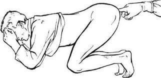
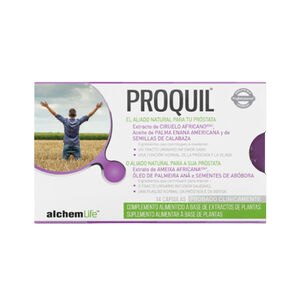
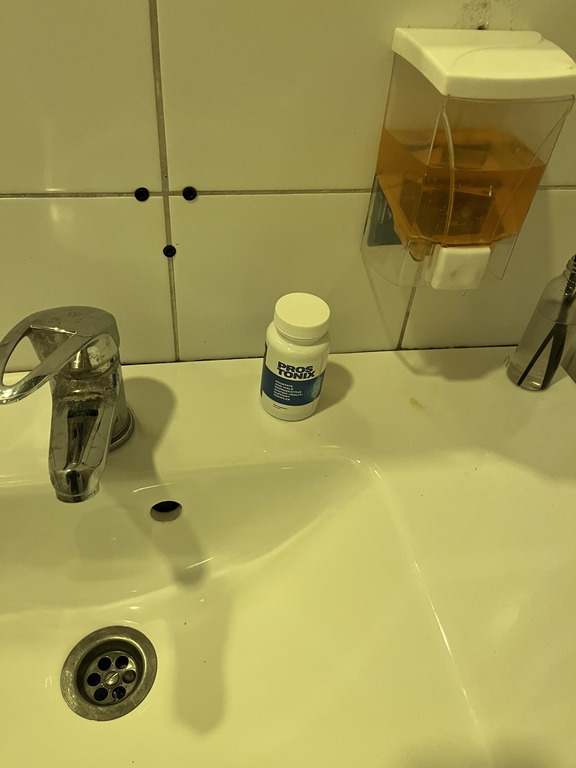
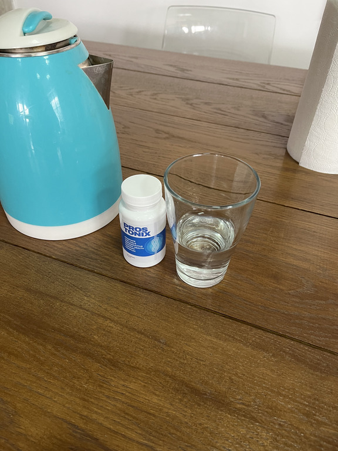

En EE.UU. y en la mayoría de los países de Europa, todos los hombres reciben tratamiento para la prostatitis en 2-3 semanas, una vez en la vida, de una vez por todas. (El método se describe a continuación)
Klaus Seehofer, director del Instituto Federal Alemán de Medicamentos Biomédicos que lleva el nombre de Paul Ehrlich, profesor del Departamento de Urología
El método de tratamiento no invasivo de la prostatitis con el suplemento natural de palmera Serenoa fue descubierto por primera vez por el urólogo alemán Klaus Seehofer en el marco de las investigaciones del Instituto Federal Alemán de Medicamentos Biomédicos que lleva el nombre de Paul Ehrlich.
Klaus Seehofer fue el primero en demostrar clínicamente la eficacia del 98% de su método y en empezar a utilizar los suplementos de palmera Serenoa en el tratamiento de la prostatitis aguda y crónica en su consulta.
Desde 1996 los suplementos de palmera Serenoa se han convertido en el estándar médico y son recomendados por los médicos en Alemania y posteriormente en muchos países de la UE y en los EE.UU..
El único equivalente español, cuya eficacia y seguridad está reconocida por la comunidad científica europea, se vende en España bajo la marca "Prostonix".
Mientras tanto en España: médicos codiciosos en connivencia con las farmacias ocultan fármacos eficaces y ordeñan anualmente el dinero de los hombres
La prostatitis es la enfermedad más común entre los hombres mayores de 40 años, y los médicos han observado una desagradable tendencia de la enfermedad a "rejuvenecer". Cada vez más hombres con "problemas" acuden a médicos de 30, 25 e incluso 20 años.
Los médicos atribuyen la popularidad de la enfermedad a sus condiciones previas. Cualquier hombre:
- que lleve un estilo de vida sedentario,
- que tenga una vida sexual irregular,
- que tenga malos hábitos,
- enfermedades infecciosas,
- predisposición hereditaria,
- estrés, enfermedad o hipotermia,
tiene casi garantizado padecer problemas de próstata. Tanto más rápido cuanto mayor sea el número de condiciones previas. Unos a los 25, otros a los 45, es sólo cuestión de tiempo.
Síntomas de prostatitis: compruébalo tu mismo:
En 2017, el Departamento de Urología dio a conocer una estadística aterradora: más del 55% de los hombres mayores de 40 años experimentan algún tipo de problemas de próstata. Determinar la presencia de prostatitis es bastante fácil y sin formación médica, la mayoría de sus síntomas son específicos:
-
Dolor tirante o punzante
- En el bajo vientre, en el escroto,
- el perineo o el pene.
-
Trastornos de la micción
- micción rápida, ardor en la uretra
- Sensación de que la vejiga no se ha vaciado completamente,
- Dificultad para orinar (chorro débil).
-
Trastornos de la función sexual
- Disminución del deseo sexual.
- Deterioro de la duración y calidad de las erecciones.
-
rastornos de la eyaculación:
- Eyaculación precoz o problemas para conseguirla.
- Eyaculación débil.
- Aumento de la fatiga y la irritabilidad.
Muchos hombres viven con prostatitis durante años, aunque su calidad de vida se vea evidentemente mermada, sin darse cuenta de las consecuencias irreversibles de lo que puede parecer una vida más o menos compatible.
Una prostatitis no tratada desemboca siempre en un adenoma de próstata ("muerte masculina").
En parte comprensible, el diagnóstico de la próstata causa un malestar y una vergüenza considerables a cualquier hombre que entienda el proceso. Además, en la inmensa mayoría de los casos, tras recibir el diagnóstico "prostatitis" las visitas al urólogo se convierten en un duro trabajo anual. Los médicos alivian los síntomas más agudos con fármacos "recomendados en farmacia", pero con cada hipotermia o incumplimiento de régimen, la prostatitis "vuelve a aparecer".
Cómo se trata aquí la prostatitis (y cómo NO DEBE tratarse).
Si vives en España, no puedes librarte de la prostatitis, aunque realmente quieras.
Procedimiento estándar para el tratamiento de la prostatitis en España.
- Un hombre va a una clínica. Paga o gratuita - no importa, ya que al final tendrá que pagar lo mismo.
- El médico lleva a cabo un examen, prescribe un montón de pruebas. Algunas de ellas ni siquiera son necesarias, pero por si acaso hay algo más que pueda tratarse. Además, las pruebas cuestan dinero.
- Tras el examen, el médico diagnostica la prostatitis y prescribe "medicamentos recomendados". Los fármacos recetados son los destinados a aliviar los síntomas agudos de la enfermedad, pero no para tratar la prostatitis crónica. Y, por supuesto, el urólogo recomienda medicamentos de empresas cuyos representantes médicos tienen un contrato con ellas. Estos medicamentos son conocidos por todos.
-
Además de los fármacos "recomendados" para aliviar los síntomas, los médicos siempre prescriben masajes prostáticos rectales o tratamientos con aparatos de efecto similar. Se trata de un procedimiento humillante y muy desagradable: el masaje se realiza con un dedo a través del ano del hombre. Por término medio, el masaje dura entre 10 y 14 sesiones. Por supuesto, hay que pagar por cada sesión.
En Alemania, este masaje no se realiza desde hace más de 20 años porque los medicamentos modernos permiten curar la prostatitis sin él.

- Además del tratamiento básico, los médicos suelen recetar fármacos para mejorar la función sexual, aumentar la calidad del esperma, "restaurar el organismo" después de los antibióticos, etc.
Como resultado, un tratamiento único de la prostatitis en España le costará a un hombre de 3000 a 10000 euros, los urólogos realmente forman un curso de tratamiento basado en las posibilidades financieras del paciente en el primer lugar. Sólo se aliviarán los síntomas agudos básicos de la enfermedad. La prostatitis crónica permanecerá y volverá a manifestarse en cuanto el hombre se enfríe en exceso o deje de seguir el régimen alimenticio prescrito por el médico. De ahí el negocio conjunto de la urología y la farmacia en España.
Cómo se trata la prostatitis en EE.UU. y en la mayoría de los países de Europa (cómo DEBE tratarse)
En estos países, ni siquiera hace falta ir al médico para curar la prostatitis. Basta con ir a la farmacia al primer síntoma y comprar un remedio probado desde hace décadas: un suplemento a base de serenoa cuya eficacia del 98% está demostrada desde los años ochenta. Por supuesto, después de numerosos controles de seguridad del método - el suplemento se ha convertido en el estándar de oro en el tratamiento de la prostatitis "de una vez por todas" en los EE.UU. y muchos países europeos. Naturalmente, este medicamento no es rentable para la mafia farmacéutica española - de hecho, es mucho más rentable "enganchar" a un hombre en el alivio anual de los síntomas dolorosos que curar la enfermedad completamente barata y accesible a todo el mundo con el medicamento.
En contraste con nuestro país, el seguro está fuertemente desarrollado en los EE.UU. y Alemania. A las compañías de seguros no les interesa que uno de cada dos hombres vaya al médico dos veces al año, porque las compañías de seguros tienen que pagar por todo esto, y los sueldos de los médicos no son pequeños. Al contrario, les interesa el tratamiento más eficaz y rápido. De una vez por todas.
En estos países, los intereses de las compañías de seguros se han impuesto a la mafia de los medicamentos y, afortunadamente para los hombres corrientes, siempre hay en el mercado un tratamiento eficaz para la prostatitis...
¿Cambiará a mejor la situación en España?
Desgraciadamente, no cabe esperar ningún cambio positivo en el trabajo de las farmacias y los médicos españoles; al fin y al cabo, el negocio farmacéutico mueve miles de millones de dólares y sus ingresos van a parar a las personas más ricas del país.
Sin embargo, hoy en día no es necesario comprar medicamentos en las farmacias. Pueden hacerlo en Internet, a través de sitios web especiales. Más recientemente, apareció en España uno de los medicamentos alemanes más eficaces: el Prostonix. Casi tan pronto como apareció, se ganó el amor popular.
Comparemos en qué se diferencia Prostonix del tratamiento español más popular contra la prostatitis, Proquil, ofrecido por las farmacias.
 Prostonix |
 Proquil |
|
|---|---|---|
| Precio: | Puedes conseguir un envase con un descuento de hasta el 50% - como parte del programa federal Men's Health | Unos 30 euros por 14 cápsulas. tratamiento recomendado: 2 meses = 1680 euros |
| Tipo de producción: | Cápsulas: 30 por envase. | Cápsulas: 14 por paquete |
| Acción: | Elimina completamente la prostatitis, incluida la prostatitis crónica. De una vez por todas. En sólo 1 ciclo de tratamiento. | Alivia únicamente los síntomas agudos de la prostatitis: dolor y trastornos urinarios. |
| Acción adicional: | º Aumenta la libido º Previene la eyaculación precoz º Mejora la potencia º Normaliza la función de la vejiga º Mejora la salud vascular |
Suaviza las heces |
| Efectos secundarios, nocivos para el organismo | Ninguno. Composición totalmente natural. | º El uso frecuente puede causar cambios malignos en la glándula prostática º Reduce la potencia º Causa problemas intestinales º Deprime el sistema inmunológico, causa alergias º Provoca fuertes dolores de estómago" |
| Principio de funcionamiento: | Actúa complejamente sobre la próstata con una composición especialmente seleccionada de 11 ingredientes naturales, proporciona una acción antiinflamatoria y fortalecedora. Disuelve toda la flora patógena de la próstata, mejora la estructura y función de la próstata. | Recomendado para la prostatitis crónica, congestiva y bacteriana. |
| Cómo actúa: | Alivia temporalmente el dolor en la próstata, enmascarando el curso de la enfermedad. | Sin embargo, una vez finalizado el tratamiento, la enfermedad vuelve a agravarse. |
| Ingredientes: | Ingredientes naturales a base de plantas y vitaminas | Aceite de semilla de calabaza, estearato de calcio monohidrato, crosspovidone, trietilcitrato, dióxido de titanio y otros productos químicos. |
| Garantía: | 365 días de garantía del fabricante | sin garantías |
Puedes comprar Prostonix a través del formulario de pedido oficial, donde tienes que especificar tus datos
Las mayores cadenas de farmacias del país ya han iniciado una campaña a gran escala contra este producto. Es posible que muy pronto también desaparezca del mercado. Recomendamos a todos los hombres que compren Prostonix mientras aún puedan hacerlo. ¡El producto está actualmente a la venta con un 50% de descuento!
Comentarios
Fernando
¡Gracias por el interesante artículo! Nuestro tratamiento realmente sale muy caro, y eso no ayuda. He pedido Prostonix. Me trataré yo mismo.
Pedro
¡Lo confirmo completamente! Prostonix es un medicamento milagroso. Lo compré en Alemania, cuando me fui de vacaciones el verano pasado. Sufro de prostatitis crónica desde hace unos 10 años. Intenté tratarla pero, como ya he dicho, el tratamiento sólo tenía un efecto temporal. Cuando utilicé Prostonix, mi prostatitis desapareció por completo. No he vuelto a tenerla durante más de seis meses. Antes sólo podía soñar con esto. Recomiendo Prostonix a todos los hombres. Es una gran ayuda.
Leo
Pedido. Realmente pedí un paquete de Prostonix con 50% de descuento)))) Gratamente sorprendido. Gracias
Maxi
Yo también tengo experiencia en el tratamiento de la prostatitis con este medicamento. Lo compré antes, pero no había promoción y costaba unos 100 euros. Pero no es una pena, lo importante es que me ayudó a deshacerme de la prostatitis en unas 3 semanas sin masajes.
Alejandro
Lo pedí y al día siguiente ya me lo entregaron en casa.
Segio
Una vez vi un programa de televisión sobre el negocio farmacéutico. Era una especie de investigación periodística. También hablaban del medicamento. Decían que aún lo tenían, pero que pronto podría desaparecer. Tenemos que aprovecharlo mientras lo tengamos.
Diego
Tengo prostatitis crónica desde los 28 años. Ahora tengo 41. Durante este tiempo la he tratado dos veces, cuando hubo exacerbaciones graves. La última vez los médicos me salvaron a duras penas. La última vez me dijeron que mi prostatitis estaba a punto de convertirse en cáncer de próstata. Por eso aconsejo a todos los que tienen prostatitis que se deshagan de ella lo antes posible. Es una plaga muy peligrosa.
Pilar
Necesito pedir uno para mi marido. Gracias.
Nicolás
Lo compré. Realmente lo conseguí con un 50% de descuento. Nunca ha habido una oferta tan especial. ¡Gracias!
Horacio
¡Prostonix es el mejor remedio que existe! Estoy de acuerdo con el autor del artículo y con todos los comentaristas que lo elogiaron. Lo utilicé hace unos 3 meses. La prostatitis ha desaparecido por completo. La tuve unos años antes, se me paraba mal la polla y solía acabar rápidamente. Ahora todo es normal.
Pepe
Tomé Prostonix ayer y lo tomaré a partir de hoy.
Francisco
He leído más sobre Prostonix. Estoy realmente impresionado. Lo he pedido. Me prometieron que me lo entregarían en casa mañana y que pagaría en el momento de la entrega. Muy conveniente.
Omar
¡Esto es realmente algo, chicos! Lo compré la semana pasada. Ahora no tengo ningún síntoma de prostatitis. No más dolor, no más correr al baño, no más molestias urinarias. Además mi potencia ha mejorado notablemente y el sexo es mucho más largo. Me siento muy bien. Con el descuento del 50% definitivamente merece la pena comprarlo. Y pagaría un par de cientos de euros por él. La eficacia del producto me ha sorprendido gratamente.
Hernán
Sí, a mí también me lo recomendaron como un buen remedio para la prostatitis. Pero todavía no lo he podido encontrar. ¡Gracias por la oportunidad de pedirlo e incluso durante la promoción!
Juan
Esto era exactamente lo que necesitaba. No soporto el dolor y estoy harto de correr al baño cada 2 minutos, tengo problemas con mi mujer. Ya estoy muy cansado.